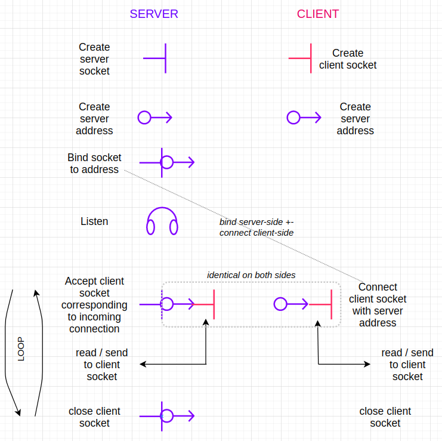

Build a Minimal Webserver in C
Machines are already strong by themselves, but their potential gets truly unleashed when they can communicate with each other. Web servers enable this communication by taking requests from and sending back responses to other machines. Here we will see how to implement a very simple web server in C for Linux. You can find the complete code for it on this repo.
Main ingredients: sockets and addresses
A web-server (and its counterparts the web-clients) in Linux deal mainly with two kinds of objects: sockets and addresses. You can imagine sockets as mail-boxes. Those mail-boxes have some characteristics like the size of the messages they can get, how they can get them, how many at the same time etc.
Adresses are like… yes, addresses, but more specific than post addresses. Imagine there are different ways to come to a given place: through the highway, through the little alley, and then different doors… in an address here you would have to specify all that.
Main steps

Server side
-
Create the server socket. This is done through the function socket() returning a file descriptor. It takes as arguments a
domain(hereAF_INETfor the IPv4 protocol), atype(hereSOCK_STREAMfor “sequenced, reliable, two-way, connection-based byte streams”) and a protocol (here0for the default protocol). -
Create the server address: it’s a
struct sockaddr_inwhere you have to specify the domain, the address proper and the port (note that you have to convert the port number (integer) withhtons()). -
Bind the socket to the address: here basically you put the mailbox at the address defined above. You do it with the function
bind()taking as arguments the file descriptor for the socket, a pointer to the address and its length. -
Listen: the socket listens for incoming connections with the function
listen(). It takes as argument the file descriptor of the (now binded) socket, and the size of the backlog (how many connections can be registered simultanously). -
Now there is a infinite loop calling each time
accept(): this halts the routine until there is an incoming connection, that gets accepted. This acceptation attaches the client socket to the (server socket + address). -
Once the server socket, the address and the client socket are attached together, the server can
read()messages from andsend()messages to the client. -
When the communication is finished, the server
close()the client socket on its side.
Client side
The process is a bit simpler on the client side:
-
Create the client socket, the same way than for the server.
-
Create the address (object) corresponding to the server address. Note that you may have to convert the IP address with
inet_pton()to store it in the right format in the fieldsin_addrof the server address (see implementation). -
Connect the client socket with the server address just defined. Note that the server socket is
binded to the server address, and the client socket isconnected to it. However,connect()andbind()take the same argument. -
Now the client can
read()andsend()messages with the server.
And hurray, both machines can communicate!!
Conclusion
This is a very simple implementation of a webserver (and a webclient) in C, that can be easily extended, for example to use concurrency (multi-threading) to handle multiple incoming connections on server-side, and/or to make it a HTTP server, or to communicate through radio (AX.25). The possibilities are countless from there!
Many details could not be covered here, it would need an entire book to cover
the whole topic. But don’t hesitate to read the doc regarding the various functions used here. Just typ for example man socket in the terminal to get it.